Открытие Доски Почета «Трудовая слава Тарусского района»
24 сентября 2013 года в Тарусском районе прошло замечательное событие – была открыта Доска Почета «Трудовая слава Тарусского района».
На церемонии открытия присутствовали: Министр конкурентной политики Калужской области Николай Викторович Владимиров, Заместитель министра труда, занятости и кадровой политики Калужской области Андрей Васильевич Жеребилов, Депутат Законодательного Собрания Калужской области, председатель территориального объединения организаций профсоюзов «Калужский областной совет профсоюзов» Александр Петрович Гречанинов, руководители предприятий и организаций, и, конечно же, люди, чьи портреты размещены на Доске Почёта.
 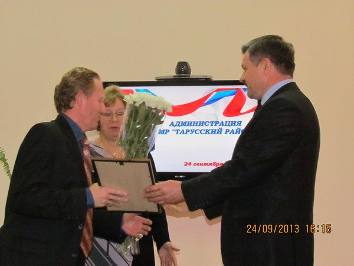
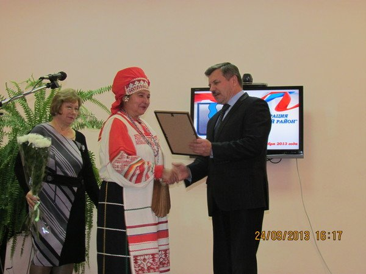
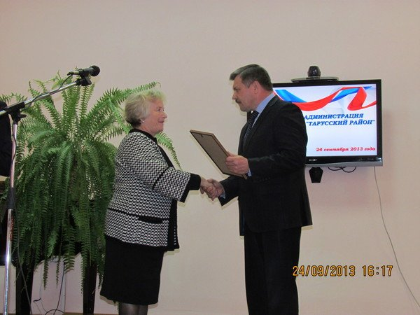
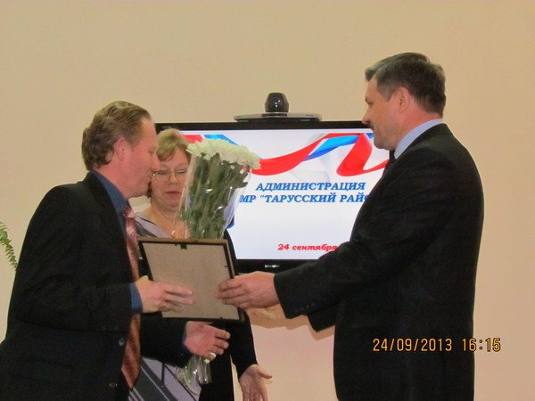
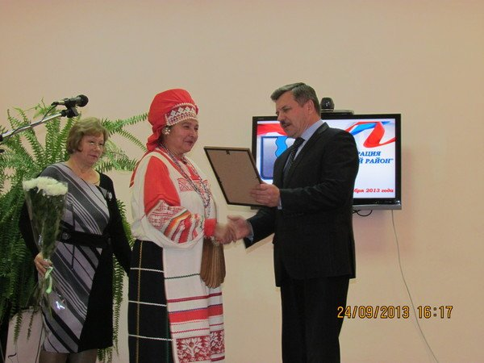
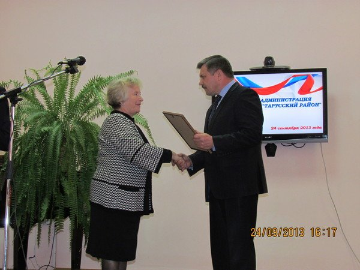
В торжественной обстановке восемнадцати жителям Тарусского района были вручены Свидетельства о занесении на Доску Почета «Трудовая слава Тарусского района»:
- Абрамову Алексею Владимировичу;
- Венгерцеву Сергею Ильичу;
- Гануленко Валентине Ивановне;
- Елизаровой Татьяне Львовне
- Костюкевич Галине Ивановне
- Леоновой Нине Ивановне
- Маслюковой Елене Геннадьевне
- Обыденкину Сергею Михайловичу
- Паршиной Анне Кузьминичне
- Погореловой Татьяне Васильевне
- Полякову Виктору Григорьевичу
- Родионовой Оксане Геннадьевне
- Скворцову Сергею Михайловичу
- Тихоновой Надежде Леонтьевне
- Троцюк Светлане Павловне
- Ушаковой Надежде Владимировне
- Чуриловой Татьяне Петровне
- Юзкевичу Николаю Александровичу
 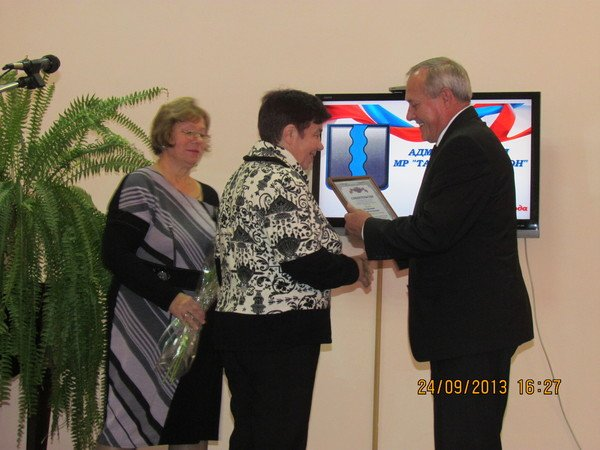
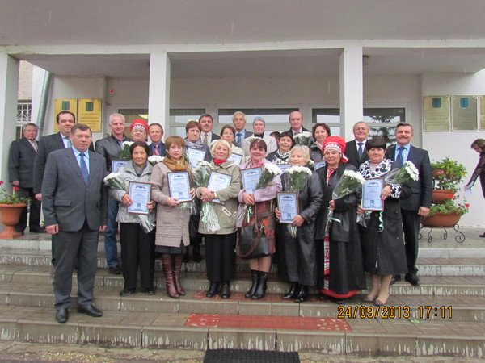
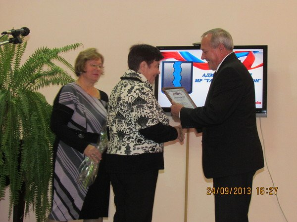
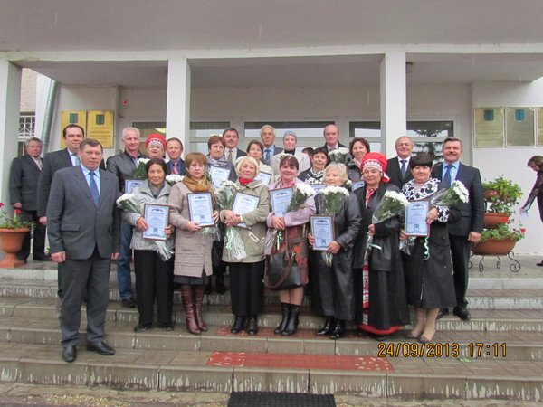

Поздравлям всех с достойной наградой! Глядя на вас, можно быть уверенными, что Тарусский район всегда будет славен трудом его замечательных жителей. Вам всё под силу – и новые достижения, и укрепление старых основ. Мы радуемся вашим успехам и победам. Мы надеемся на вас и гордимся вами!
Праздник спорта
До зимней Олимпиады в Сочи осталось менее 140 дней. Для того чтобы все дети в достаточной степени поняли, какого уровня спортивное событие было доверено нашей стране, отделом по туризму, спорту и социальной политике было решено рассказать мальчишкам и девчонкам о том, что такое Олимпиада, с чего она начиналась и по каким видам спорта пройдут соревнования в Сочи в 2014 году.
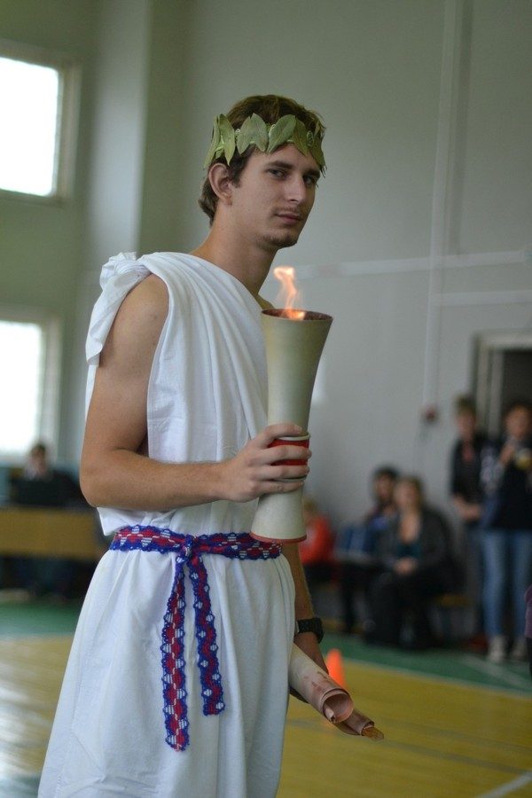
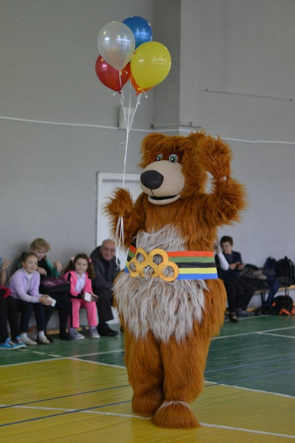
Дети не любят слушать лекции, для успешного усвоения какой-либо теории необходимо преподнести ее в виде игры, поэтому 20 сентября в спортивном зале Тарусской школы №1 состоялся настоящий праздник спорта. Участие приняли 4 команды: «Сильные», «Смелые», «Ловкие», «Быстрые».
Исполняющая обязанности заместителя главы администрации Трошина Вера Сергеевна во вступительном слове познакомила юных участников с величественным Прометеем с факелом в руках. Факел пылал ярким олимпийским огнем.
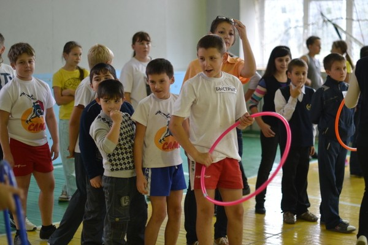
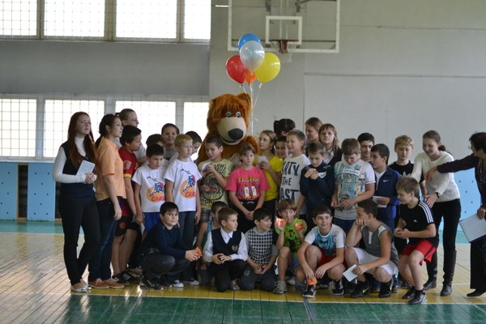
Соревнования были проведены по следующим видам спорта, как сноубординг, биатлон, бобслей, скелетон, хоккей, санный спорт, лыжные гонки, керлинг и парное фигурное катание. Победу завоевала команда «Сильные». Искренне поздравляем победителей и всех участников соревнований!
Открытие памятника Белле Ахмадулиной в Тарусе
14 сентября 2013 года в Тарусе состоялось открытие памятника Белле Ахмадулиной. Церемонию открытия провела Президент Международного Фонда гуманитарных исследований «Толерантность» Наталья Солодилина. В церемонии приняли участие: заместитель губернатора Калужской области, руководитель представительства Правительства Калужской области при Правительстве РФ в г. Москве В.В.Потёмкин, министр конкурентной политики Калужской области Н.В.Владимиров, заместитель министра культуры Калужской области В.Ф.Терёхин, Президент Государственного музея изобразительных искусств им.А.С.Пушкина И.А.Антонова, руководство города и района, известные российские писатели, актёры, художники, журналисты.
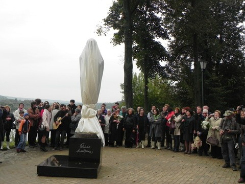
 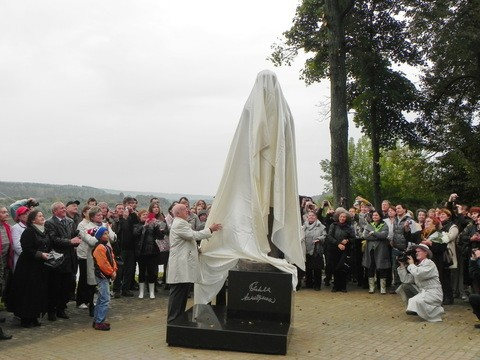
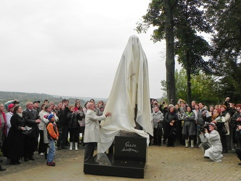
Автор скульптуры - народный художник России Борис Мессерер. В своем выступлении он поблагодарил администрации города и района за поддержку, а так же выразил признательность всем, кто принял участие в реализации проекта. Под бурные аплодисменты собравшихся Б.А.Мессерер и глава администрации города Тарусы А.Т.Дёмкин сняли покрывало, окутывавшее памятник, и многочисленным взорам собравшихся здесь людей предстал образ Беллы Ахмадулиной.
Глава администрации МР «Тарусский район» Е.М.Мальцев в свою очередь поблагодарил Б.А.Мессерера и отметил, что за последние три года это четвёртый памятник в городе, установленный на средства благотворителей.
Среди выступавших на церемонии открытия были известные писатели, художники и артисты. Особым вниманием публики было отмечено появление на сцене Ирины Александровны Антоновой, которая более 50-ти лет возглавляла музей изобразительных искусств им. А.С.Пушкина, основанный И.В.Цветаевым, обращаясь ко всем присутствующим, она сказала: "Сегодня значимое событие в культурной жизни России. Это праздник величия искусства, праздник любви".
 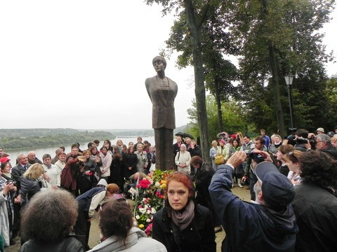
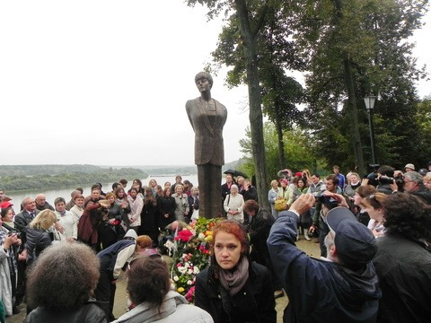

Таруса всегда вдохновляла на творчество многих великих мастеров кисти и слова. В открывшемся памятнике объединились имена двух из них – Беллы Ахмадулиной и Бориса Мессерера.
Спасибо за бесценный подарок городу!
В Тарусе зарегистрирован сотый малыш
12 сентября 2013 года в Отделе ЗАГС администрации МР «Тарусский район» в торжественной обстановке состоялась регистрация рождения сотого малыша, родившегося в 2013 году.
В праздничной обстановке заведующая отделом ЗАГС Бакланова Е.Ф. вручила счастливой маме, Каплаух Екатерине Анатольевне, первый документ в жизни ее ребенка – свидетельство о рождении.


Мир без детей - мир без надежд и будущего. Дети приносят в дом радость и счастье, наполняют жизнь родителей теплом и светом. Сегодня в Тарусе зарегистрирован новый гражданин России и новый житель нашего прекрасного города. Расти, малыш, здоровым, крепким, на радость родителям и нашему городу!

 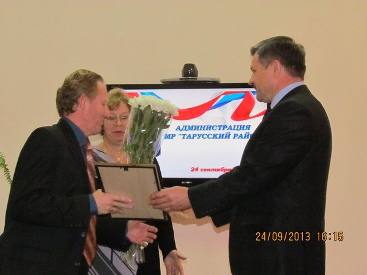
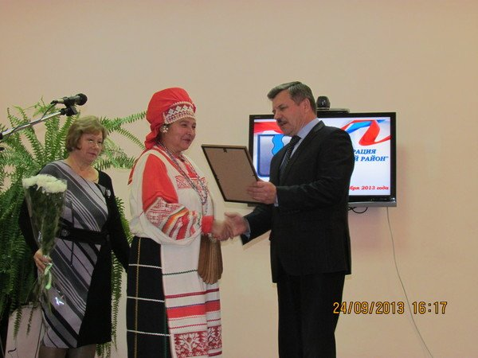
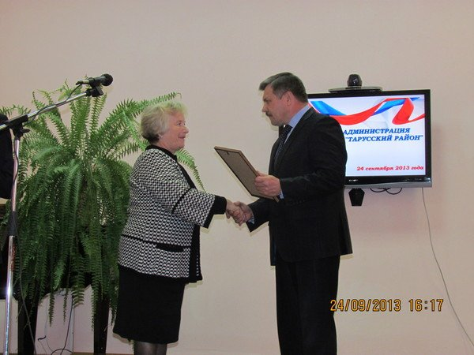
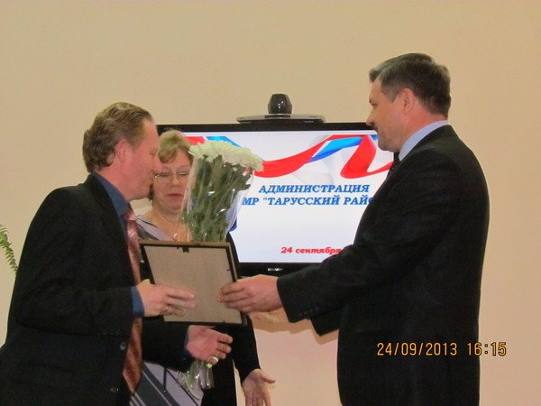
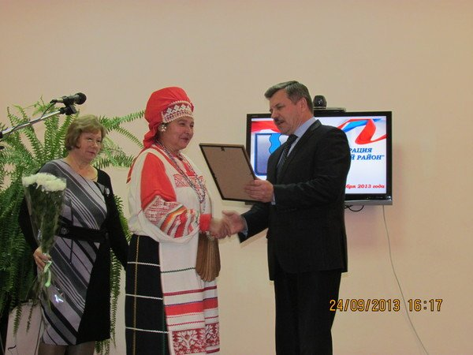
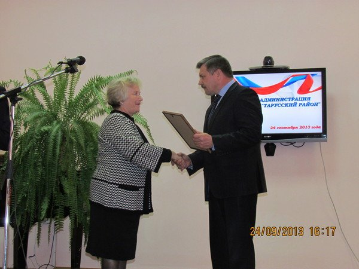
 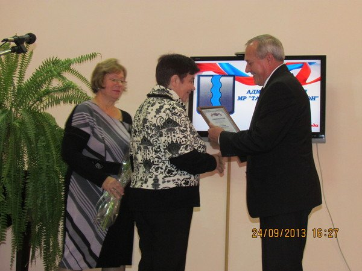
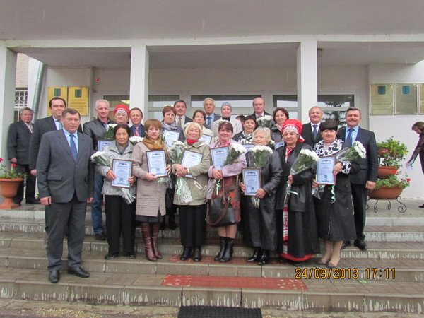
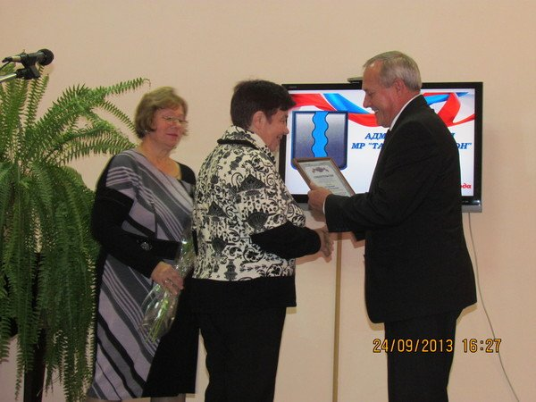
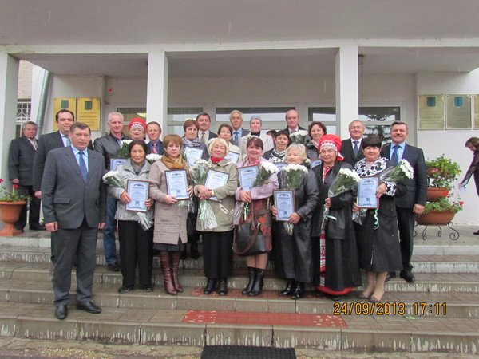


{kind=link}
{kind=link}
{kind=link}
{kind=link}
{kind=link}
{kind=link}
{kind=link}
{kind=link}
{kind=link}
{kind=link}
{kind=link}
{kind=link}